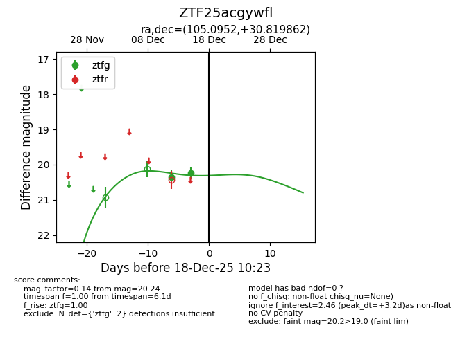
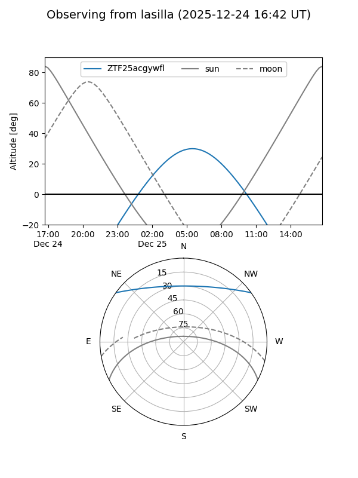
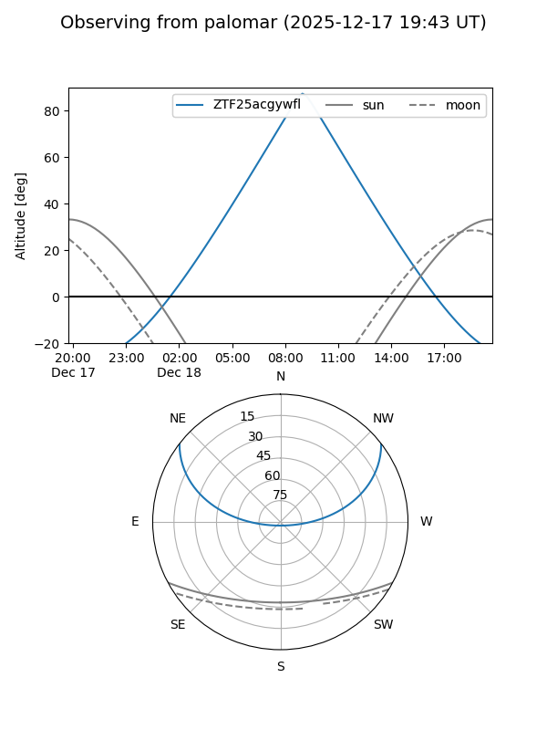
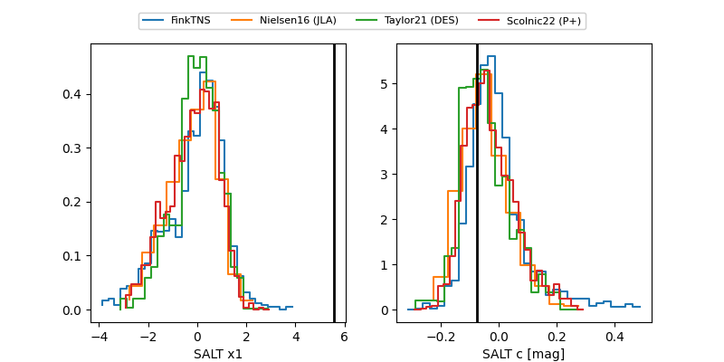

ZTF25acgywfl
Target ZTF25acgywfl at 2025-12-22 16:41
Aliases and brokers:
FINK: fink-portal.org/ZTF25acgywfl
Lasair: lasair-ztf.lsst.ac.uk/objects/ZTF25acgywfl
ALeRCE: alerce.online/object/ZTF25acgywfl
alt names
ZTF25acgywfl (ztf,fink_ztf)
Coordinates:
equatorial (ra, dec) = 105.0952,+30.81986
equatorial (HMS+DMS) = 07:00:22.86,+30:49:11.50
galactic (l, b) = (185.7487,+15.27402)
Flags:
Photometry:
last ztfg=20.35
3 ztfg detections
Lightcurve

Visibility


Additional plots
